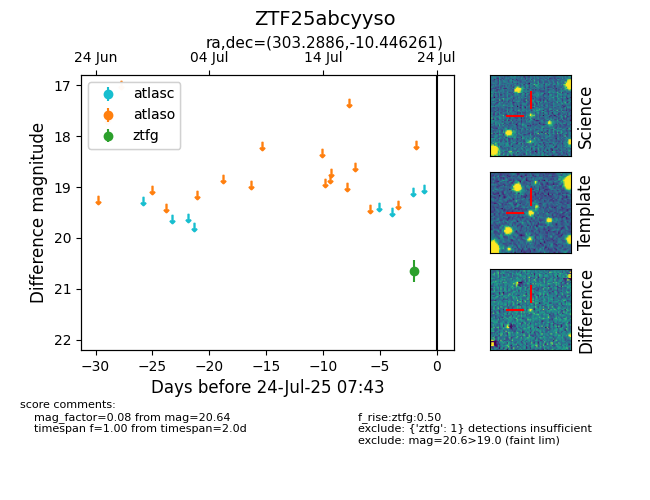

Target ZTF25abcyyso at 2025-07-24 07:43, see:
FINK: fink-portal.org/ZTF25abcyyso
Lasair: lasair-ztf.lsst.ac.uk/objects/ZTF25abcyyso
ALeRCE: alerce.online/object/ZTF25abcyyso
alt names
ZTF25abcyyso (ztf,fink)
coordinates:
equatorial (ra, dec) = (303.2886,-10.44626)
galactic (l, b) = (32.6308,-22.84105)
photometry
last ztfg=20.64
1 ztfg detections
